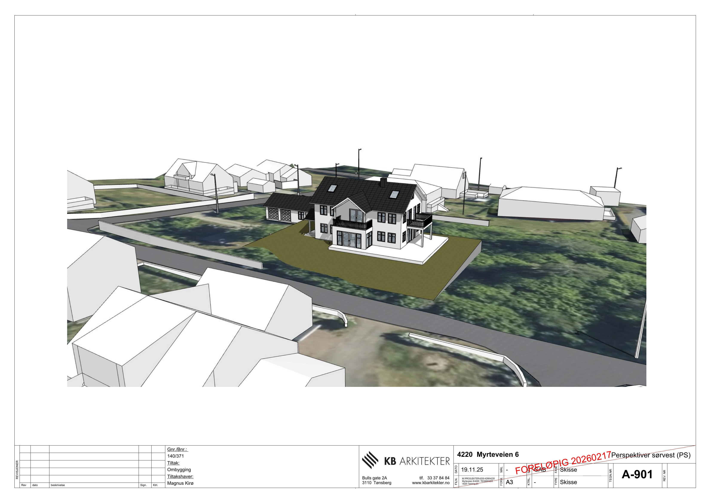

Thermal Envelope
200mm Rockwool wall insulation + Shou Sugi Ban timber cladding + Ruukki metal roof (Ug ≤ 0.5 W/m²K).
HVAC & Heat Pump
NIBE Air-to-Water heat pump + Uponor hydronic floor heating loops & Systemair HRV (>88% efficiency).
65 m² Open Zone
HEB 220 structural steel beam replacing 1974 partition walls, integrating marble island & fireplace.
Tønsberg Aesthetics
PBL § 29-2 visual quality compliance (Shou Sugi Ban burned wood, matte roofing, 2700K dark sky LEDs).
Standard & Recommended Building Order (Byggerekkefølge)
Explore the recommended 9-stage engineering sequence for total house rehabilitation. Learn critical dependencies, technical guidelines, Tønsberg permit & aesthetic requirements, and common out-of-order errors.
Before & After Visualizer
Drag the interactive slider to compare original 1974 conditions with target modern rehabilitation designs.


NotebookLM Project Sources ("m6 - renew")
Synchronized Markdown repository context files ready for AI ingestion
💡 Suggested NotebookLM Prompt
"How does the M6 material selection (Shou Sugi Ban burned timber & Ruukki matte roofing) satisfy Tønsberg municipality's Veileder for visuelle kvaliteter under PBL § 29-2?"
Rehabilitation Budget Tracker
Track total allocated budget vs actual spending across all renovation categories.
| Category | Allocated Budget | Actual Spent | Status | Contractor / Supplier |
|---|---|---|---|---|
| Demolition & Structural Steel | €28,000 | €29,200 | Completed | Nordic Build AS |
| Roofing, Insulation & Windows | €48,000 | €46,500 | Completed | Schüco / Ruukki |
| HVAC & Electrical Rough-In | €42,000 | €31,000 | In Progress | Thermic Flow AS / Volta Tech |
| Exterior Shou Sugi Ban Cladding | €35,000 | €12,000 | In Progress | Shou Sugi Ban Timber Co. |
| Interior Oak & Kitchen Island | €45,000 | €11,000 | Planned | Nordic Joinery & Marble |
| Landscaping & Terrace | €12,000 | €0 | Planned | GardenCraft AS |